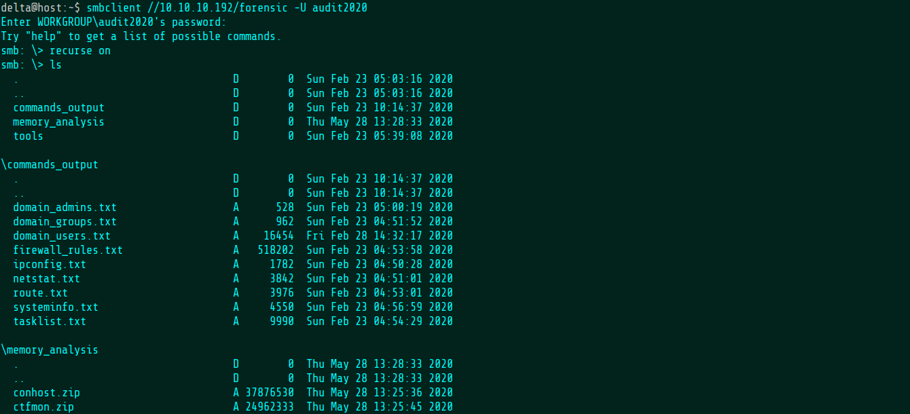

Welcome
Joe Grassl
Freelance codeslinger
>>Blackfield
A Windows machine from HackTheBox. Let's see how to get root.
Nmap reveals a set of fairly standard Windows services. Let's start with SMB.
The profiles share has a list of what appear to be usernames.
After saving the names to a file, we can enumerate which accounts are actually on the server using an nmap script against the Kerberos service.
Since Kerberos is open, we can also check to see if any of these users are vulnerable to ASREP roasting using Impacket's GetNPUsers script. It turns out that the support account actually is!
Now, hashcat can be used to crack the hash received in the previous step.
Cracked!
To do a bit more recon, I used the creds with pyhound, a script to remotely gather information for use with Bloodhound, an Active Directory enumeration tool.
The svc_backup account can do PS remoting, so this is our primary target. After telling Bloodhound that I've owned the support account and looking at that account's first degree object control, it appears that support has a "ForceChangePassword" permission for the audit2020 account.
After looking up what that means, it turns out you can use rpcclient to change a user's password. I also tried to change svc_backup's password just to see if it would work but we only have permission for audit2020.
Apparently, audit2020 has access to the forensic share.

There's an LSASS memory dump in there. I used pypykatz (Python version of mimikatz) to dump a hash belonging to svc_backup.
Port 5985 is open, so from here, I used a tool called Evil-WinRM to get a shell using just the hash. No cracking required. This nets me the user flag.
Checking the groups for svc_backup shows that the user is, not surprisingly, a Backup Operator.
After searching up what that means within a security context, I find that Backup Operators are actually very powerful. First, I upload a couple of
dlls in order to abuse the privilege.
After that, you can just rip out the beating heart of Active Directory: ntds.dit, a file containing the usernames and hashes of every single user on the domain, including admins.
Impacket's secretsdump script reads out the administrator hash.
Then, it's just a matter of reconnecting over Evil-WinRM with the new hash to get root.